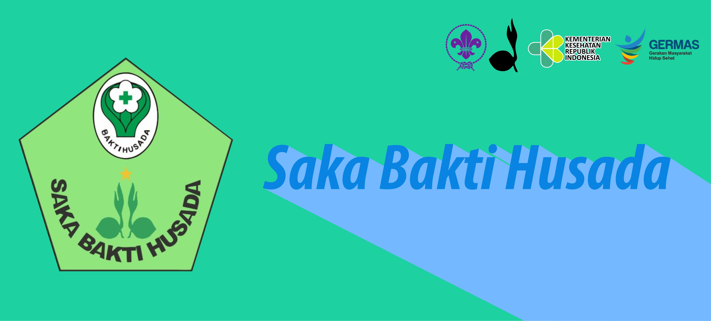
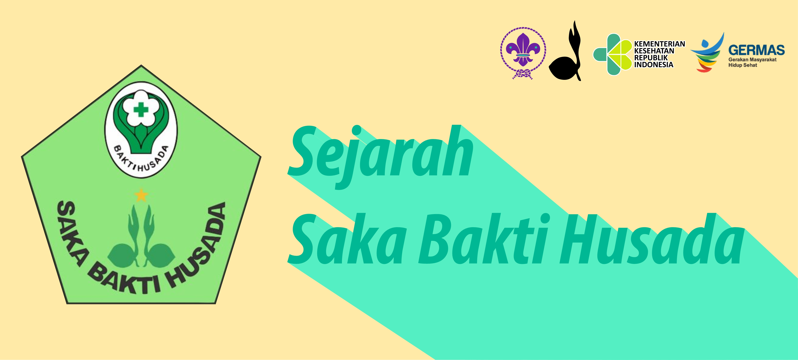
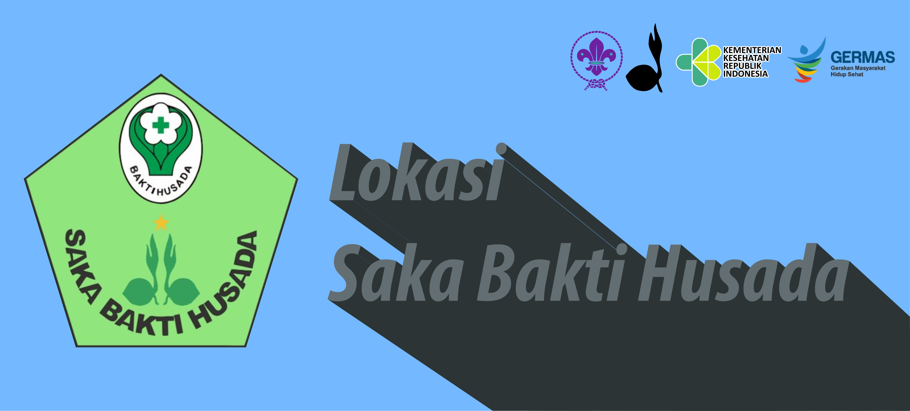
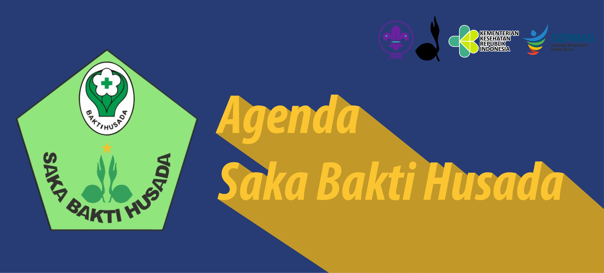
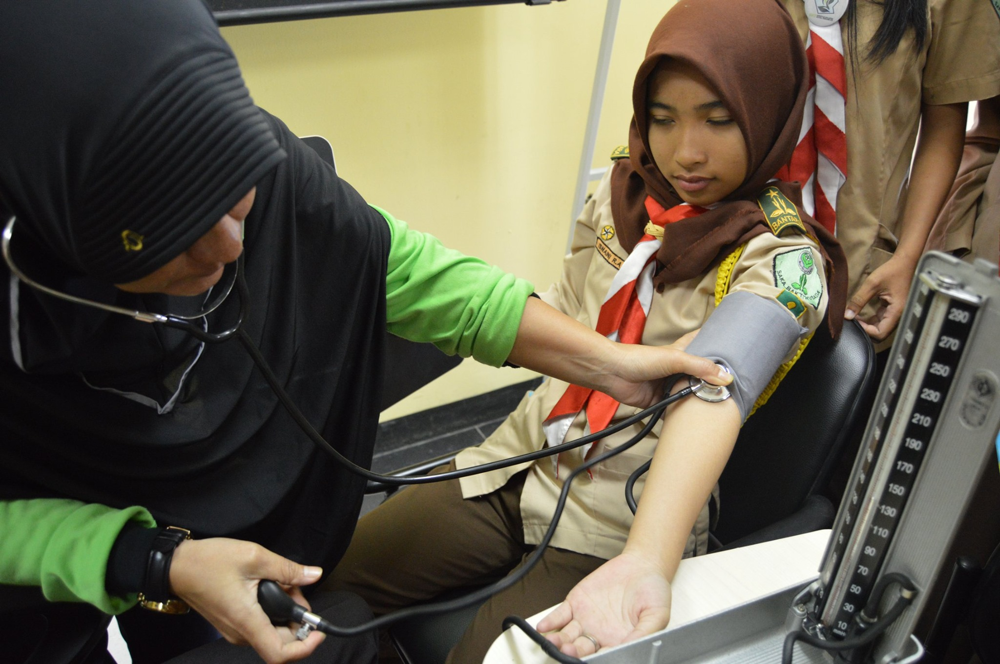
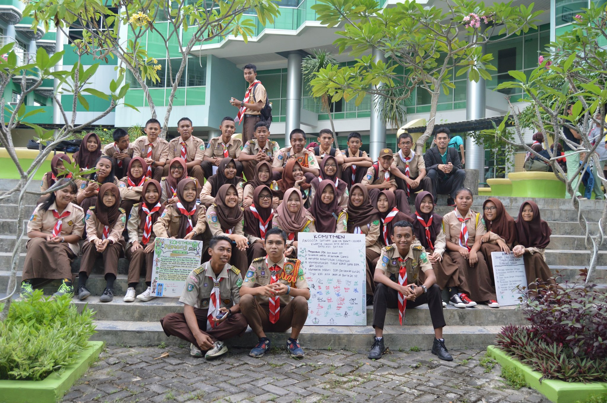
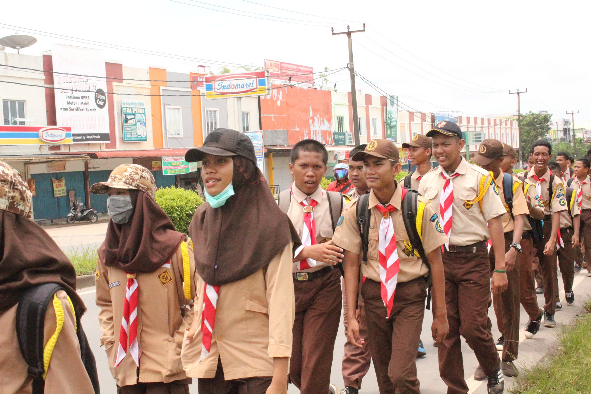
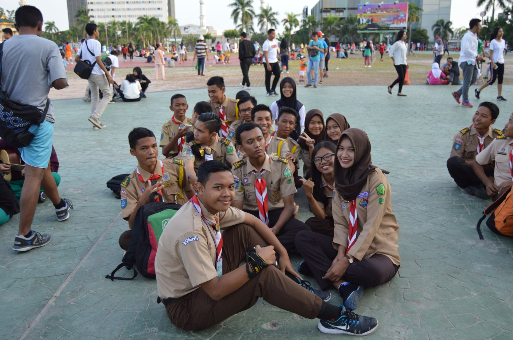
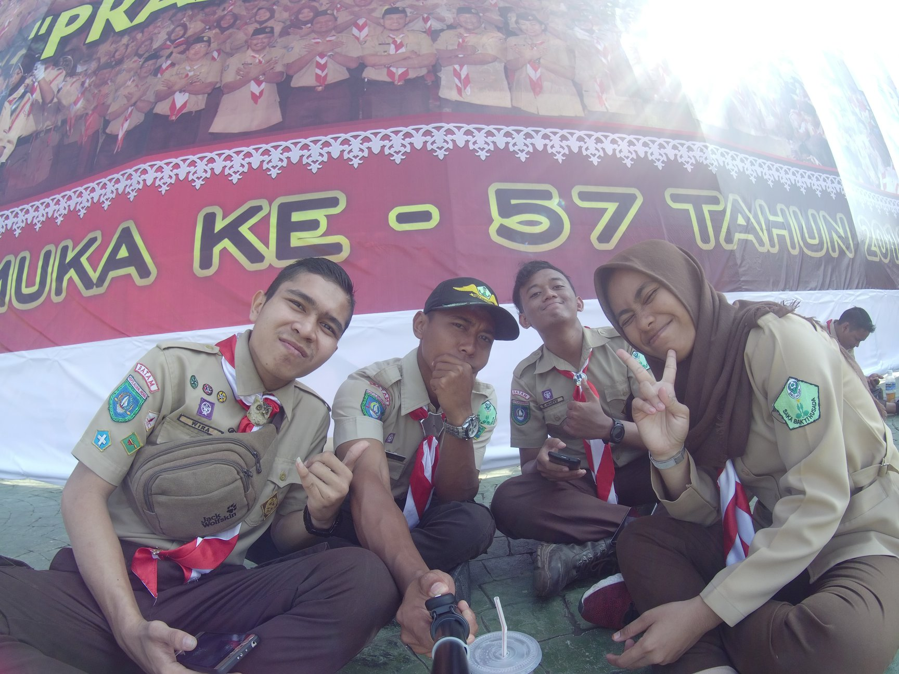
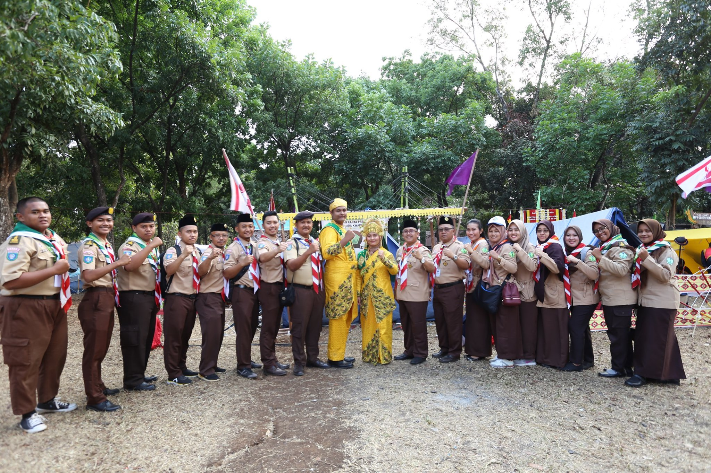

Pengertian Saka Bakti Husada

Gerakan Pramuka bertujuan untuk terbentuknya kaum muda yang memiliki iman, takwa, watak kepribadian, akhlak mulia dan kecakapan hidup sebagai kader bangsa dalam menjaga keutuhan Negara Kesatuan RI, mengamalkan Pancasila, mewujudkan masyarakat madani, melestarikan lingkungan hidup, dan menjaga perdamaian dunia. Gerakan Pramuka berfungsi menumbuhkembangkan tunas bangsa menjadi warga negara yang lebih bertanggung jawab, mampu membina dan mengisi kemerdekaan serta mampu membangun dunia yang lebih baik.
Satuan Karya Pramuka disingkat Saka yaitu wadah pendidikan dan pembinaan guna menyalurkan minat, mengembangkan bakat dan menambah pengalaman para Pramuka Penegak dan Pandega dalam berbagai bidang ilmu pengetahuan dan teknologi serta keterampilan. Saka juga memotivasi mereka untuk melaksanakan kegiatan nyata dan produktif sehingga dapat memberi bekal bagi kehidupannya dalam melaksanakan pengabdiannya kepada masyarakat, bangsa dan negara sesuai dengan aspirasi pemuda Indonesia dan tuntutan perkembangan pembangunan serta peningkatan ketahanan nasional.
Satuan Karya Pramuka Bakti Husada yaitu salah satu jenis Satuan Karya Pramuka yang merupakan wadah kegiatan untuk meningkatkan pengetahuan dan keterampilan praktis dalam bidang kesehatan yang dapat diterapkan pada diri, keluarga, lingkungan dan mengembangkan lapangan pekerjaan di bidang kewirausahaan. Krida adalah satuan terkecil dari saka, sebagai wadah kegiatan keterampilan, pengetahuan dan teknologi tertentu.
Anggota Saka Bakti Husada adalah Pramuka Penegak dan Pramuka Pandega putra dan putri yang menjadi anggota gugusdepan di wilayah ranting atau cabang yang mengembangkan bakat, minat, kemampuan, dan pengalaman di bidang keterampilan, ilmu pengetahuan dan teknologi tertentu melalui Saka Bakti Husada. Dewan Saka Bakti Husada adalah badan yang dibentuk oleh anggota Saka Bakti Husada, beranggotakan Pramuka Penegak dan Pramuka Pandega yang bertugas merencanakan dan memimpin pelaksanaan kegiatan Saka Bakti Husada sehari-hari di satuannya.
Sejarah Saka Bakti Husada

Saka Bakti Husada diresmikan pada tanggal 17 Juli 1985, dengan dilantiknya Pimpinan Saka Bakti Husada Tingkat Nasional oleh Kwartir Nasional Gerakan Pramuka. Dan kemudian dicanangkan oleh Menkes RI pada tanggal 12 November 1985 sebagai Hari Kesehatan Nasional di Magelang.
Tujuan dibentuknya Saka Bakti Husada adalah memberi wadah pendidikan dan pembinaan bagi para Pramuka Penegak dan Pramuka Pandega untuk menyalurkan minat, mengembangkan bakat, kemampuan, dan pengalaman dalam bidang pengetahuan dan teknologi serta keterampilan bidang kesehatan yang dapat menjadi bekal bagi kehidupan dan penghidupannya untuk mengabdi pada masyarakat, bangsa dan negara.
Sasaran dibentuknya Saka Bakti Husada adalah agar para anggota Gerakan Pramuka yang telah mengikuti kegiatan Saka tersebut:
- Memiliki pengetahuan, keterampilan dan pengalaman dalam bidang kesehatan, khususnya tentang :
- Lingkungan Sehat
- Keluarga Sehat
- Penanggulangan Penyakit
- Gizi
- Obat
- Perilaku Hidup Bersih dan Sehat
- Mampu memberikan pengetahuan dan keterampilan tentang kesehatan kepada para anggota Pramuka di gugusdepan (gudep) masing-masing.
- Memiliki sikap dan perilaku hidup sehat serta menjadi contoh bagi teman sebaya, keluarga dan masyarakat di lingkungannya.
- Mau dan mampu menyebarluaskan informasi kesehatan tersebut di atas kepada masyarakat.
Lokasi Saka Bakti Husada Batam

Kota Batam adalah sebuah kota terbesar di Provinsi Kepulauan Riau, Indonesia. Wilayah Kota Batam terdiri dari Pulau Batam, Pulau Rempang dan Pulau Galang dan pulau-pulau kecil lainnya di kawasan Selat Singapura dan Selat Malaka. Pulau Batam, Rempang, dan Galang terkoneksi oleh Jembatan Barelang.
Di Kota Batam, ada juga Saka Bakti Husada, sama halnya dengan Saka Bakti Husada Nasional, Saka Bakti Husada Kota Batam juga memiliki tujuan dan sasaran yang sama. Lokasi dari Saka Bakti Husada di Kota Batam ialah :
| Alamat |
Balai Pelatihan Kesehatan Batam |
| Jam Operasional |
Setiap Hari Minggu, 08.00 WIB - 16.00 WIB |
| Total Angkatan |
10 Angkatan |
| Total Peserta Didik |
800 Peserta Didik |
| Ketua Dewan Saka |
Muhammad Ihsan |
| Nomor Telepon |
+62778 xxx xxx |
| Find me on Gmaps |
Find! |
Kegiatan Rutin Saka Bakti Husada Batam

Anggota Saka Bakti Husada, adalah Pramuka Penegak Bantara, Penegak Laksana dan Pramuka Pandega dari gugus depan yang mempunyai minat dan bakat di bidang kesehatan.
Setiap hari Minggu, Saka Bakti Husada mengadakan kegiatan latihan rutinitas, yang dimana latihan rutin tersebut terkadang diisi dengan materi kepramukaan, materi kesakaan, materi krida, materi kesehatan, olah fisik dan kegiatan lainnya. Latihan Rutin tersebut dilaksanakan setiap hari minggu dari pukul 08.00 WIB sampai dengan 16.00 WIB
Selain itu, Saka Bakti Husada Batam juga sering mengadakan kegiatan internal dan juga mengikuti kegiatan secara eksternal.
Kegiatan Internal

Latihan Rutin Praktek Cek Tensi

Latihan Rutin dan Penandatanganan Janji

Latihan Rutin Edisi Penjelajahan
Kegiatan Eksternal

Hari Peduli Sampah Nasional

Upacara Peringatan HUT Pramuka

Kemah Nasional Kesehatan IV - Jakarta